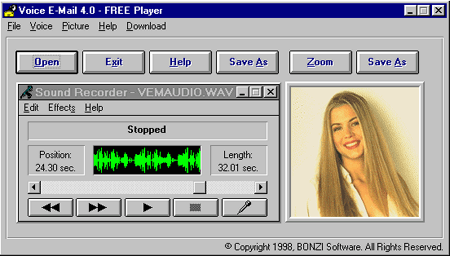

|
Free Voice E-Mail Player |
|
Free Voice E-Mail Player |
The Free Voice E-Mail Player lets you open, uncompress, and play back any Voice E-Mail message created using Voice E-Mail by BONZI Software.  Note: The full version of Voice E-Mail allows you to create, compress, and send Voice E-Mail messages as well as receive, uncompress, and play them. But you do not need the full version of Voice E-Mail if you want to only PLAY Voice E-Mail messages that people send you. System Requirements:
|
| Home | FREE Player | Support | Copyright © 1995 - 2004 BONZI.COM Software. All rights reserved. |